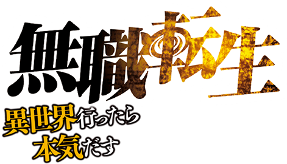
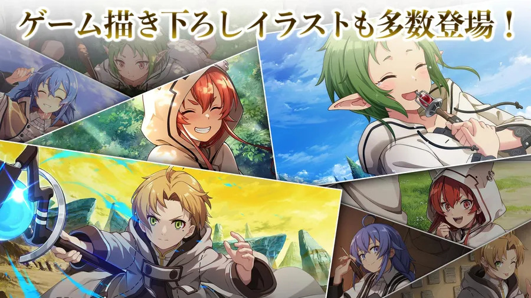

Mushoku Tensei (無職転生 ~異世界行ったら本気だす~, Mushoku tensei: isekai ittara honki dasu littéralement « Réincarnation sans emploi : j'essaierai sérieusement si je vais dans un autre monde ») est une œuvre japonaise du genre isekai (réincarnation dans un autre monde), écrite par Rifujin na Magonote et illustrée par Shirotaka. Initialement publiée en ligne sous forme de web novel en 2012, l’histoire a rapidement gagné en popularité, donnant naissance à une version light novel, un manga et une adaptation en anime.
L’œuvre se distingue par sa profondeur psychologique et l’évolution de son personnage principal. Contrairement à de nombreux héros d’isekai, Rudeus Greyrat est conscient de ses défauts et cherche activement à les surmonter, ce qui en fait un personnage complexe et nuancé.
Mushoku Tensei aborde des thèmes variés tels que la rédemption, l’identité, la famille et le poids des choix personnels. Elle se démarque également par la richesse de son univers : systèmes de magie détaillés, cultures variées et mythologie complexe.
Malgré certaines controverses liées à des scènes jugées sensibles, l’œuvre reste l’une des plus influentes du genre isekai, notamment grâce à sa narration approfondie et sa capacité à traiter des sujets matures.
Rifujin na Magonote est un écrivain japonais connu principalement pour Mushoku Tensei. Il débute sur la plateforme Shōsetsuka ni Narō, un site permettant aux auteurs amateurs de publier leurs œuvres.
Son style se distingue par une forte attention au développement psychologique des personnages et une volonté de traiter des thèmes matures rarement explorés dans l’isekai.
Le succès de son web novel a conduit à une adaptation en light novel illustrée par Shirotaka, consolidant sa place parmi les auteurs influents du genre.
Mushoku Tensei apparaît à une période où le genre isekai connaît une forte expansion, notamment grâce aux plateformes de publication en ligne comme Shōsetsuka ni Narō.
Contrairement aux œuvres contemporaines souvent centrées sur la puissance immédiate du héros, Mushoku Tensei propose une approche plus réaliste et progressive du développement du personnage.
L'œuvre est aujourd’hui considérée comme l’un des pionniers ayant influencé de nombreux isekai modernes, notamment par sa structure narrative et la profondeur de son univers.
Mushoku Tensei : Isekai Ittara Honki Dasu (無職転生 ～異世界行ったら本気だす～) est une série de light novels japonaise écrite par Rifujin na Magonote et illustrée par Shirotaka. L'œuvre débute en 2012 sous forme de web novel sur la plateforme Shōsetsuka ni Narō, un site de publication en ligne permettant aux auteurs amateurs de diffuser leurs récits.
Face à son succès croissant, la série est ensuite éditée en version light novel par Media Factory à partir de 2014 sous le label MF Books. Elle connaît par la suite plusieurs adaptations, dont un manga et une série d’animation produite par le studio Bind, diffusée pour la première fois en janvier 2021.
L’œuvre s’inscrit dans le genre isekai, caractérisé par le transfert d’un individu dans un monde parallèle. Toutefois, Mushoku Tensei est souvent considéré comme l’un des titres ayant fortement contribué à la popularisation moderne de ce genre, en posant certaines bases narratives reprises par de nombreuses œuvres ultérieures.
L’histoire suit un homme japonais de 34 ans, sans emploi et socialement isolé, qui meurt dans un accident avant de se réincarner dans un univers de fantasy sous le nom de Rudeus Greyrat. Contrairement à de nombreux protagonistes du genre, il conserve les souvenirs, la personnalité et les regrets de sa vie passée.
Cette particularité constitue le point central du récit : Rudeus entreprend de reconstruire son existence en évitant les erreurs qu’il a commises auparavant. Le récit ne se limite pas à une progression en puissance, mais met en avant une évolution psychologique progressive, marquée par des échecs, des remises en question et des dilemmes moraux.
L’univers de Mushoku Tensei se distingue par sa richesse et sa cohérence interne. Le monde est structuré autour de plusieurs continents, cultures et systèmes politiques, avec une attention particulière portée aux langues, aux traditions et aux hiérarchies sociales.
Le système de magie occupe également une place centrale. Il repose sur différents types de magie (offensive, curative, invocation, etc.) et sur des niveaux de maîtrise clairement définis. Rudeus se démarque par sa capacité à utiliser la magie sans incantation, ce qui constitue une exception notable dans cet univers.
L’œuvre accorde également une grande importance aux relations humaines. Les interactions entre les personnages, qu’il s’agisse de liens familiaux, amicaux ou amoureux, évoluent au fil du temps et participent activement au développement narratif.
Mushoku Tensei aborde des thèmes variés tels que la rédemption, la reconstruction personnelle, le traumatisme, la solitude et l’identité. Le récit explore notamment les conséquences psychologiques du passé du protagoniste et son impact sur ses choix dans sa nouvelle vie.
En parallèle, l’histoire intègre des éléments plus classiques du genre fantasy, tels que des combats, des aventures, des créatures fantastiques et des conflits politiques, créant un équilibre entre développement introspectif et progression narrative.
Malgré son succès, l’œuvre a suscité certaines controverses, notamment en raison de la représentation de sujets sensibles liés au comportement du protagoniste. Ces éléments ont alimenté des débats sur la réception de l’œuvre et son interprétation.
Néanmoins, Mushoku Tensei est aujourd’hui largement reconnu comme une œuvre majeure du genre isekai, tant pour son influence que pour la profondeur de son écriture. Elle a contribué à définir des standards narratifs repris dans de nombreuses productions contemporaines.
| Sortie du: | Date de diffusion |
|---|---|
| Light Novel | 22 novembre 2012 |
| Manga | 23 octobre 2014 |
| Anime | 11 Janvier 2021 |
Cliquez ici pour sauter à la Présentation.
Visitez Wikipedia pour plus de détails.